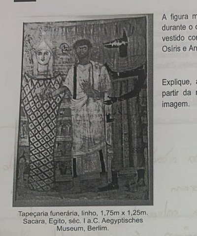

Professora: Bruna
Leia o trecho abaixo e responda aos itens:
Segundo as minhas pesquisas, foram assim os tempos passados, embora seja difícil dar crédito a todos os testemunhos nesta matéria. [...] A explicação mais verídica, apesar de menos frequentemente alegada, é, em minha opinião, que os atenienses estavam tornando-se muito poderosos, e isto inquietava os espartanos, compelindo-os a recorrerem à guerra. [...].
TUCÍDIDES. História da Guerra do Peloponeso. Brasília: Editora Universidade de Brasília, Instituto de Pesquisa de Relações Internacionais; São Paulo: Imprensa Oficial do Estado de São Paulo, 2001. XLVII, 584 pp. 13-15.
a) A qual conflito o trecho faz referência? Justifique com uma passagem do excerto.
b) Como o conflito expresso no registro acima contribui para a perda da independência das pólis gregas?
Leia o excerto e responda ao item:
Roma foi singular de um modo diferente porque era um implacável Estado de conquista desde o começo de sua história documentada. A combinação de, por um lado, aquisição territorial e contínua fixação de camponeses (cidadãos) nas terras confiscadas com, por outro lado, retenção de uma estrutura de cidade-estado e uma certa medida de participação popular no governo proporcionou um cunho peculiarmente romano a todos os aspectos de sua história, sociedade e política.
FINLEY, M. I. A política no mundo antigo. Rio de Janeiro: Zahar, 1983. p. 80. Adaptado.
Associe a afirmação: "Roma foi singular de um modo diferente porque era um implacável Estado de conquista desde o começo de sua história documentada [...]" com o mito de origem da cidade de Roma.
Analise a imagem e responda ao item:

A figura mostra uma tapeçaria funerária produzida no Egito, durante o chamado Período Helenístico, retratando um homem vestido como grego, posicionado entre dois deuses egípcios, Osíris e Anúbis.
Explique a característica principal do Período Helenístico, a partir da representação dos três elementos constituintes da imagem.
Tapeçaria funerária, linho, 1,75m x 1,25m. Sacara, Egito, séc. I a.C. Aegyptisches Museum, Berlim. Apud DOMINGUES, Joelza Esther. História em Documento. Imagem e texto. 6. 2ª ed. São Paulo: FTD, 2013. Original colorido.
Leia o excerto abaixo e responda aos itens:
Quando os Gracos tentaram seguir os passos de Sólon e Psístrato era demasiadamente tarde: nessa altura, o século II a. C., eram necessárias medidas muito mais radicais do que as praticadas em Atenas para salvar a situação dos pobres.
ANDERSON, Perry. Passagens da Antiguidade ao Feudalismo.
a) Qual é o único elemento que é possível de ser apontado como comum, entre as histórias de Sólon, Psístrato e os irmãos Graco? Justifique.
b) Por que é possível afirmar que a proposta de Tibério Graco visava uma mudança estrutural no interior da sociedade romana?
Leia o excerto abaixo e responda ao item:
Embora os povos da Antiguidade Oriental pareçam distantes da cultura ocidental atual, tanto temporalmente quanto geograficamente, a verdade é que, em nosso dia a dia, temos, indiretamente, presentes contribuições culturais de povos como os antigos hebreus, fenícios e povos da antiga Mesopotâmia.
Aponte uma contribuição importante fornecida pelos fenícios, à nossa sociedade. Justifique.
Leia o texto abaixo e responda o item:
Em 2019, Zahi Hawass [arqueólogo e ex-Ministro de Antiguidades do Egito] relançou sua campanha de restituição [de peças egípcias em museus europeus], perguntando aos diretores dos Museus Estatais de Berlim, do Museu Britânico e do Museu do Louvre: 'como você pode recusar emprestar estes itens ao novo Grande Museu Egípcio, quando você levou tantas antiguidades do Egito?' [...] Todos os três museus recusaram seus pedidos. [...] Um porta-voz do Museu Britânico diz: 'No Museu Britânico, os visitantes podem ver a Pedra Roseta [...] dentro do contexto mais amplo de outras culturas antigas, incluindo seus contemporâneos como Roma, Atenas e Pérsia, permitindo que o público explore este vasto arco da história [...].'
Reportagem não assinada. 22 ago. 2022. Disponível em: https://dasartes.com.br/de-arte-a-z/ex-ministro-de-antiguidades-egipcio-pede-devolucao-de-pecas-a-museus-europeus. Acesso em: 05 mai. 2025.
Por que é possível afirmar que a posição adotada pelo porta-voz do Museu Britânico é eurocêntrica? Justifique.
Leia o trecho abaixo e responda aos itens:
Embora os macedônicos fossem orgulhosos, sabiam que o restante do mundo considerava seu reino arcaico, tribal e insignificante. [...] Naquele tempo, o Oriente era o foco da civilização, bem iluminada pela História, e o Ocidente, um território escuro e selvagem onde viviam os bárbaros. No atlas das percepções e dos preconceitos geográficos, a Macedônia ocupava a periferia do mundo civilizado. Provavelmente poucos egípcios saberiam localizar no mapa a pátria do seu próximo rei.
VALLEHO, Irene. O infinito em um junco: a invenção dos livros no mundo antigo. Tradução de Ari Roitman e Paulina Wacht. Rio de Janeiro: Intrínseca, 2022. p. 33.
a) Relacione a ascensão de Alexandre, o Grande, com a política desenvolvida no Mundo Grego no período Clássico.
b) Com o falecimento de Alexandre, o Grande, houve a dominação romana. Explique como, a partir desta sequência de eventos, é possível afirmar: os gregos perderam sua independência política, mas em termos culturais, se vê sua permanência.